2. NumPy, Pandas og Matplotlib¶
Í þessum kafla er fyrst gefið yfirlit yfir helstu svið reiknifræði þ.m.t. gagnavísinda og þá Pythonpakka sem smíðaðir hafa verið til að fást víð þau. Síðan er fjallað um grunnpakkann NumPy sem allir hinir byggja á, Pandas fyrir almenna gagnameðhöndlun og loks er talað dálítið um tölvuteikningu með pakkanum Matplotlib. Um aðra pakka er fjallað samhliða seinni köflum um línulega algebru, föll af mörgum breytistærðum, og reiknifræði, og þar verður líka talað meira um þessa þrjá pakka.
2.1. Inngangur¶
2.1.1. Hvað er reiknifræði¶
Reiknifræði er orð sem búið var til upp úr 1970, með merkingu „beiting stærðfræði, tölvunarfræði og tölfræði til að leysa vísindaleg verkefni með tölvu“ um það bil. Þegar orðið var búið til var hugtakaflóran ekki alveg jafnmargbrotin og nú, og reiknfræði var í grófum dráttum talin ná yfir aðgerðagreiningu (operations research), tölulega greiningu (numerical analysis), tölfræði (statistics) og tölvunarfræði (computer science). Fljótlega fengu samt síðasttöldu fræðin sjálfstæðan tilverurétt. Nefna má að Háskóli Íslands hefur boðið upp á kjörsviðið Stærðfræði–reiknifræði síðan 1972 (og í byrjun var tölvunarfræði innan þess) og svo Tölvunarfræði–reiknifræði síðan um aldamót. Við Raunvísindastofnun Háskólans var starfrækt „Reiknifræðistofa“ frá 1972. Hún er enn til en kallast „Reiknifræðideild“ síðan 2008, og undir hana heyrir m.a. tölfræði.
Í dag hefur fræðasviðum sem tengjast hagnýtingu á stærðfræði fjölgað mjög, þau skarast á ótal vegu, og sum eru kölluð þverfagleg. Hér verður gerð tilraun til að telja upp helstu fræðasvið reiknifræði og tilheyrandi undirsvið, með þeim fyrirvara að margir myndu flokka öðruvísi. Listinn takmarkast við svið sem snúast um að leysa verkefni í raunvísindum og verkfræði með tölvum. Þannig er t.d. fræðilegri tölvunarfræði sleppt (og reyndar mörgum öðrum undirsviðum hennar), og sömuleiðis fræðilegri tölfræði. Ekki er reynt að skilgreina sviðin nema lítillega, heldur verða áhugasamir að leita á netinu, t.d. í Wikipedíu.
Það er ekki auðvelt að finna eitt orð í ensku sem er jafn vítt og reiknifræðihugtakið eins og það er notað hér. Það sem kemst kannski næst því er computational science, en það orð er samt oftar notað í þrengri merkingu, einkum yfir fræðigreinarnar sem taldar eru upp sem „grunngreinar reiknifræði“ í listanum.
Grunngreinar reiknifræði
Töluleg greining (numerical analysis, computational science stundum notað sem samheiti)
Töluleg línuleg algebra (numerical linear algebra), ein undirgreina tölulegrar greiningar
Aðgerðagreining (operations research), ýmsir mundu samt ekki telja hana til reiknifræði
Töluleg bestun (numerical optimization), undirgrein tölulegrar greiningar og aðgerðagreiningar, oft er líka talað um bestunarfræði (sem fjallar einnig um fræðilega bestun)
Stærðfræðileg líkansmíð (mathematical modelling), þverfaglegt svið milli flestra fræðasviðanna í þessum lista auk annarra, t.d. verkfræði, eðlisfræði og efnafræði
Gagnavísindi (data science), stundum flokkað sem undirgrein tölvunarfræði
Vélanám (machine learning), stundum talið það sama og reiknigreind (computational intelligence),
Gagnanám (data mining), e.t.v. stundum talið undirgrein vélanáms. Ath. að hér er „nám“ þýðing á „mining“ en ekki „learning“. Kannski mætti tala um gagnagrennslan?
Stórgögn (big data), eða gagnagnótt, líka mætti tala um stórgagnagreiningu (big data analytics)
Djúpnám (deep learning), undir þetta falla djúp tauganet, sem eru grundvöllur í ýmissi nýjustu framþróun, t.d. í myndgreiningu (lesa handskrift, þekkja andlit), talgreiningu (skilja talað mál) og vélrænni þýðingu (google translate)
Tölvunarfræði (computer science)
Gagnagrindur og reiknirit (data structures and algorithms), hér teljast m.a. ýmis leitar-, röðunar- og netafræðireiknirit
Gervigreind (artificial intelligence), tengist náið ýmsum undirsviðum gagnavísinda
Ofurtölvuvinnsla (high performance computing (HPC), parallel computing)
Tölfræði (statistics)
Hagnýtt tölfræði (applied statistics)
Reiknifræðileg tölfræði (computational statistics)
Bayesísk tölfræði (Bayesian statistics)
Tengt fræðasviðsheiti sem oft er notað er „hagnýtt stærðfræði“ (applied mathematics). Það er samt þrengra að því leyti að það einskorðast gjarna við undirsvið í stærðfræði, og víðara að því leyti að oft eru talin með ýmis fræðileg undirsvið sem ekki nýtast beint til lausnar verkefna með tölvum.
2.1.2. Python-pakkar fyrir vísindalega reikninga¶
Aðalreiknifræðipakkarnir í Python eru NumPy fyrir vigur- og fylkjareikninga og SciPy fyrir önnur svið reiknifræði, þ.á.m. tölulega greiningu, tölulega línulega algebru (scipy.linalg) og tölulega bestun (scipy.optimize). Meðal verkefna sem leysa má með SciPy eru brúun (interpolation), töluleg heildun, töluleg lausn diffurjafna, útreikningur sérhæfðra falla (special functions), og merkjavinnsla (signal processing).
Fyrir gagnavísindi má nefna Pandas sem er mikið notaður pakki fyrir almenna gagnavinnslu, sklearn (= Scikit-learn) fyrir reiknigreind og gagnanám, og loks pakkana TensorFlow og PyTorch fyrir vélanám þ.á.m. djúpnám. Fyrir klassísk tölvunarfræðileg reiknirit er ekki til einn samstæður pakki, en hægt er að finna sjálfstæða pakka fyrir mörg þeirra. Fyrir ofurtölvuvinnslu er til pakki MPI, en auk þess má nefna að bæði NumPy og SciPy nota OpenMP sjálfkrafa. Föll fyrir alla algengustu tölfræðireikninga eru í scipy.stat, og jafnframt er stundum nóg að nota Pandas, en fyrir flóknari tölfræðireikninga og líkansmíð er pakkinn statsmodels. Margir af þessum pökkum eru hver öðrum háðir. Þannig nota flestir ef ekki allir pakkarnir vigra og fylki sem eru útfærð í NumPy.
Teiknipakkanum Matplotlib er ekki hægt að sleppa í þessari upptalningu. Með honum er hægt að teikna gröf falla, súlurit, scatter-myndir, hæðarlínumyndir, þrívíðar mesh-myndir og upplýstar myndir af (margvíðum) föllum, o.s.frv. Að lokum má nefna SymPy pakkann fyrir symbólska reikninga, t.d. einföldun á stærðfræðiformúlum og sjálfvirka diffrun.
2.1.3. Vigrar og fylki í stærðfræði¶
Nákvæmar skilgreingar á stærðfræðilegum vigrum og fylkjum og skyldum hugtökum eru í byrjun 4. kafla sem er um (svolítið fræðilega) línulega algebru. Hér látum við duga styttri útgáfur sem nægja fyrir NumPy umfjöllunina í kafla 2.2.
Vigur (vector) er runa af endanlega mörgum tölum sem gefið er nafn og notuð sem ein heild. Einstakar tölur nefnast stök (elements), þau eru oftast tölusett 1,2,3… en stundum 0,1,2…, og i-ta stak vigurs \(a\) er táknað \(a_i\). Vigur með tölunum 1,2 og 4 má rita \((1,2,4)\).
Fylki (matrix) er tafla með tölum sem gefið er nafn og notuð sem heild. Tölur í fylki heita líka stök. Stakið í línu \(i\) og dálki \(j\) í fylki \(A\) er táknað \(a_{ij}\). Í stærðfræðilegri umfjöllun er oftast byrjað að telja í 1 svo stakið efst til vinstri er \(a_{11}\), en þegar verið er reikna í tölvum er oft byrjað að telja í 0. Fylki með \(m\) línum og \(n\) dálkum er kallað \(m\) sinnum \(n\) fylki, táknað \(m \times n\). Hér er dæmi um \(2 \times 3\) fylki:
2.1.4. Um orðið Fylki¶
Skv. Tölvuorðasafninu hefur orðið fylki tvær merkingar á íslensku:
[einkum í stærðfræði] rétthyrnd tafla af tölum (eða öðrum gildum) = e. matrix.
[einkum í tölvufræði] samsteypa (aggregate) hluta af sama tagi þar sem hægt er að vísa í einstök stök með vísi eða vísum (index, indices) = e. array.
Í seinni merkingunni er fylki notað sem samheiti yfir vigra, tvívíð fylki, og margvíð fylki (þar sem vísarnir eru 3 eða fleiri). Stundum er talað um vigra sem einvíð fylki.
Aðvörun
Þar sem NumPy er beggja megin veggjar, í stærðfræði og í tölvufræði, verður orðið fylki notað í báðum merkingunum hér – lesandi þarf stundum af ráða af samhenginu við hvað er átt.
2.2. NumPy pakkinn¶
Með NumPy er hægt að vinna með vigra og fylki. Öfugt við lista hafa öll stökin sama gagnatag, kommutölur eða heiltölur. Þetta gefur mun hraðvirkari vinnslu þegar unnið er með mörg stök. Flestar listaaðgerðir má nota á NumPy fylki og auk þess bætast við ýmsar reikniaðgerðir línulegrar algebru. Næsta grein gefur stutta kynningu á möguleikunum, en nánari útskýringar eru svo í greinunum sem fylgja á eftir.
2.2.1. Kynning á NumPy¶
Athugið
Efni þessarar greinar er tekið beint úr Jupyter-vinnubókinni numpykynning.ipynb
Listum breytt í fylki með np.array, útprentun fylkja og eiginleika þeirra:
# R1 import numpy as np # Forrit sem notar numpy skammstafar það np skv. hefð v = np.array([0., 2.]) A = np.array([[2., 3., 4.], [4., 5., 6.]]) print('v =', v) print('A ='); print(A) print(f'ndim={A.ndim}, shape={A.shape})Athugið
Því miður henta f-strengir ekki vel til að prenta út fylki, t.d. er ekki hægt að tilgreina fjölda aukastafa:
print(f'A = {A:.3f}')gefur villu.Æfing
Opnið vinnubókina numpykynning.ipynb og breytið/bætið við reit R1.
Prófið
print('A =', A)og líkaprint(f'A =\n{A}')Prentið líka út
A.sizeogA.dtypeBúið til vigur
x = [3,4,5]og prentið hann út bæði með print og með display. Skoðið x.dtype.Endurtakið lið 3 með
x = [3.,4,5](niðurstaðan skýrist af því að öll stök NumPy vigurs eru alltaf með sama gagnatag).
Föll til að búa til fylki:
# R2 Z = np.zeros((2,2)) # Hefð að nota stóra stafi fyrir fylki E = np.ones((2,2)) F = np.full((3,5), 3.14159) I = np.eye(2) z = np.zeros(3) # og litla stafi fyrir vigra e = np.ones(4) k = np.arange(1,11) h = np.linspace(0,3,7) print(Z); print(E); print(F); print(I) print(f'z = {z}, e = {e}'); print(f'k = {k}, dtype={k.dtype}') print(f'h = {h}, dtype={h.dtype}')Æfing
Farið í reit R2 í bókinni.
Stikinn í zeros verður að vera par: Prófið að kalla á
np.zeros(2,2)Búið til \(2 \times 3\) núllfylki og \(3 \times 3\) fylki með 7.5 í öllum sætum.
Notið
np.linspacetil að búa til vigurinn \((1, 1.5, 2, 2.5,\ldots, 8)\)
Hægt er að stilla fjölda aukastafa o.fl. í útskrift:
# R3 np.set_printoptions(precision=3, floatmode='fixed', suppress=True) A = np.full((3,5), 3.14159) print('A = '); print(A) # Stillt aftur á sjálfgefna útskrift: # np.set_printoptions(precision=8, floatmode='unique', # suppress=False)Æfing
Keyrið reit R3 og svo reit R2 aftur
Slembifylki:
# R4 Slembifylki import numpy.random as npr for i in range(4): A = npr.random((2,2)) # tekur inn par, gefur 2 x 2 slembifylki print(A)Æfing
Keyrið reit R4 aftur og aftur
Fylkja og vigurreikningar:
# R5 A = np.array([[2., 3.], [4., 5.]]) x = np.array([1, 2, 3], dtype=float) y = np.array([1.0, 1.0, 2.0]) z = x + y # tilsvarandi stök lögð saman B = A*A # -- og margfölduð S = np.sqrt(A) # tekur kvaðratrót af hverju staki E = np.exp(A) # og exp (líka til np.sin, np.log o.s.frv.) print(z); print(B) print(S); print(E)Æfing
Prófið fleiri aðgerðir (mínus, deilingu, margföldun fylkis og tölu)
2.2.2. Leiðbeiningar um NumPy á netinu¶
Eins búast má við er hægt að finna allskyns hjálp um NumPy á netinu t.d. NumPy Basics Cheat Sheet. Einnig má finna nýlega bók sem fjallar um NumPy, Matplotlib og Pandas, sem er að ýmsu leyti ágæt, Python Data Science Handbook.
2.2.3. Hvernig má búa til NumPy fylki og vísa stök þeirra?¶
Í kynningunni að framan sáum við að einvíð fylki (vigra) má búa til með fallinu np.array, sem breytir Python-runu af tölum (oftast lista, en það má líka vera samstæða eða ítrari) í breytu af taginu np.ndarray (n-dimensional array), sem er grunntagið í NumPy. Oftast er tagið óformlega kallað NumPy-array og á íslensku NumPy-fylki. Hlutur af taginu np.ndarray getur verið einvítt, tvívítt eða margvítt fylki en í þessum fyrirlestrarnótum höldum við okkur til einföldunar að mestu við einvíð og tvívíð fylki.
Til að búa til tvívítt fylki er kallað á np.array með viðfang sem er runa af runumum (oftast listi af listum) sem allar þurfa að vera jafnlangar, og tilgreina línur fylkisins (sbr. kynninguna), t.d.:
A = np.array([[1,2,3], [5,7,9]])
sem gefur fylkið \(A = \begin{pmatrix}1 & 2 & 3\\5 & 7 & 9\end{pmatrix}\).
Í kynningunni voru líka sýnd ýmis föll til að búa til sérstök fylki, núllfylki, einingafylki (sjá grein 4.8.2), fylki með öllum stökum eins og vigra með hlaupandi stökum.
Ef x er einvítt NumPy fylki (vigur) þá er vísað í einstök stök hans eins og í stök í Python lista, sem sé með x[i] t.d. x[0], x[1], og talningin byrjar í 0. Til að vísa í stak í línu i og dálki j í NumPy fylki A notast A[i,j]. Sjá nánar í grein 2.2.11.
2.2.4. Eiginleikar vigra og fylkja¶
Sérhver hlutur af taginu np.ndarray hefur margvíslega eiginleika
(attributes). Ef x er np.ndarray þá fæst eiginleiki e með x.e.
Helstu eiginleikarnir eru:
ndim: Fjöldi vídda: 1 fyrir vigra og 2 fyrir fylki.
shape: samstæða (tuple, stak, par, þrennd) með ndim stökum, fjöldi staka í vigri, fjöldi lína og dálka í fylki: Fylki með 3 línum og 2 dálkum hefur shape = (3,2).
size: Heildarfjöldi staka í vigrinum/fylkinu, margfeldi stakanna í shape
dtype: Tag staka í vigrinum eða fylkinu. Er venjulega float64 eða int64 en getur líka verið t.d. int32, bool, object o.fl. Venjulegasta tagið er float64 og slík stök eru að flestu leyti eins og kommutölur af venjulega float-taginu í Python.
itemsize: Fjöldi bæta í hverju staki í fylkinu, 8 fyrir float64 og int64.
data: Bendill á minnisblokk þar sem sjálf stök fylkisins eru geymd, einkum nytsamlegt þegar Python er tvinnað við C.
(Sjá fyrsta sýnidæmið í grein 2.2.1)
2.2.5. Föll og aðferðir í NumPy¶
Hugtakið aðferð (method) var útskýrt stuttlega í 1. kafla (1.5.2). Til að rifja það upp, þá er aðferð hugtak í hlutbundinni forritun (object oriented programming), í raun ein tegund af falli (function) sem kallað er á með
x.aðferð(stikar)
þar sem x er hlutur (object). Í NumPy er x oftast af taginu ndarray, og aðferðin getur bæði notað x og breytt því. Það þarf sem sé ekki að nefna np þegar NumPy-aðferðir eru notaðar, en það þarf hinsvegar þegar notuð eru önnur NumPy föll:
np.fall(stikar).
Ef x er einn af stikunum getur fallið líka bæði notað og breytt x.
Oft er til bæði NumPy fall og aðferð með sama nafni fyrir sömu aðgerð (sjá t.d. næstu grein), í mótsögn við markmiðið sem nefnt var í innganginum (grein 1.1.1), að í Python sé helst aðeins ein leið til að útfæra tiltekna aðgerð. Skýringin er a.m.k. stundum söguleg, því NumPy varð til sem sambræðingur tveggja eldri kerfa, Numeric og Numarray,
2.2.6. Innlestur og útskrift¶
Hægt er að lesa fylki úr textaskrá með fallinu loadtxt. Það er bara hægt að lesa tölur og skráin verður að hafa jafnmargar tölur á hverri línu. Fyrir utan textaskrár sem geymdar eru í núverandi möppu getur loadtxt lesið skrár sem eru á netinu. Hér eru nokkur dæmi sem skýra notkunina:
skrá = 'datafile.txt' #
A = np.loadtxt(skrá) # les alla skrána inn í eitt fylki A
x,y,z = np.loadtxt(skrá) # les þriggja línu skrá inn í þrjá vigra
x,y,z = np.loadtxt(skrá).T # les þriggja dálka skrá inn í þrjá vigra
A = np.loadtxt(skrá, skiprows=1) # sleppir fyrstu línunni
A = np.loadtxt(skrá, usecols=(0,1)) # les bara fyrstu tvo dálkana
A = np.loadtxt(skrá, delimiter=',') # les csv-skrá
url = 'http://cs.hi.is/strei/a.txt' #
A = np.loadtxt(url) # les skrá af netinu
Virkinn .T í fjórðu línu í dæminu nefnist bylting, og er útskýrður í grein 2.2.8.
Til að skrifa fylki í skrá má nota savetxt fallið:
np.savetxt('skrá.txt', x, fmt='«snið»')(t.d. með f.«snið» =%5.2f)
2.2.7. Fleiri föll¶
Minnsta og stærsta stak og staðsetning þeirra:
np.min(x), np.max(x), np.argmin(x), np.argmax(x)(eða
x.min(), x.max(), x.argmin(), x.argmax())(
min,max, … í seinni línunni eru aðferðir)
Meðaltal, staðalfrávik og miðtala:
np.mean(x), np.std(x), np.median(x)(eða
x.mean(), x.std(), en enginx.median()aðferð er til)
Reyndar eru tvær aðferðir til að reikna staðalfrávik \(n\) talna, í annarri er deilt með \(n-1\) áður en tekin er kvaðratrót, en í hinni er deilt með \(n\). Mörg forritunarmál deila með \(n-1\) m.a. Matlab, Excel og R, en NumPy deilir með \(n\). Á Wikipediu heitir gildið sem NumPy reiknar \(s_N\) en hitt heitir \(s\). Til að fá \(s\) með NumPy má nota np.std(x, ddof=1).
Föllin fyrir lista og samstæður sem talin voru í grein 1.6.2 er öll hægt að nota líka fyrir NumPy fylki, en það gildir ekki um allar aðferðirnar, t.d. ekki count, index, extend og pop.
2.2.8. Bylting og afpökkun¶
Í kafla 4.1.6 er fjallað um byltingu fylkja í línulegri algebru, sem fæst með því að skipta á línum og dálkum. Stærðfræðilegi rithátturinn fyrir byltingu fylkis \(A\) er \(A^T\), lesið „A bylt“. Í NumPy má rita A.T til að bylta fylki A, til dæmis:
import numpy as np
A = np.array([
[3,2,1],
[0,1,0],
[2,2,2]])
B = A.T
print(B)
# Skrifar:
[[3 0 2]
[2 1 2]
[1 0 2]]
Í ýmsu samhengi virkar fylki eins og samstæða af línum sínum, bæði þegar því er gefið gildi (eins og við höfum séð) en líka þegar það er notað til að gefa gildi. Ef A er 3 x 3 fylki má þannig skrifa
(u,v,w) = A
til að setja línur A inn í u, v og w. Það má líka sleppa svigunum: u,v,w = A. Hér virkar A eins og þrennd af línum sínum, og þegar þrennd er gefið gildi með A fer hver lína inn í sitt stak – eftir par = (3,4); (u,v) = par verður u=3 og v=4. Þetta er kallað afpökkun (unpacking).
Þar með er komin skýring á því hvernig við gátum lesið línur eða dálka skrár inn í vigra í grein 2.2.6.
2.2.9. Rökvísun¶
Hægt er að velja stök úr NumPy vigri með því að vísa með rökvigri (logical vector), sbr. eftirfarandi dæmi, þar sem við höfum úthlutað árunum 2015–2018 prímtölum. Á ensku er talað um logical indexing.
ár = np.arange(2015,2019)
p = np.array([2,3,5,7])
I = [False, True, True, False]
J = ár < 2017
print(p[I])
print(p[ár < 2017])
print(J, ár[J], p[J])
#skrifar:
[3 5]
[2 3]
[ True True False False] [2015 2016] [2 3]
2.2.10. Innfeldi¶
Í kafla 4.1.5 er viguraðgerðin innfeldi skilgreind, en innfeldi tveggja vigra er tala sem fæst með því að margfalda saman tilsvarandi stök og leggja útkomurnar saman. Innfeldi vigra \(x\) og \(y\) er táknað með \(x\cdot y\). Ef t.d.
þá er innfeldið \(x\cdot y = 1\cdot 4 + 2\cdot 5 + 3\cdot 6 =
4 + 10 + 18 = 32\). Í NumPy eru þrjár leiðir til að reikna innfeldi vigra x
og y:
með
np.dot(x,y)(sem sé með NumPy fallinunp.dot)með
x.dot(y)(sem sé með array-aðferðinnidot)með
x @ y(sem sé með virkjanum@)
(á ensku eru fall, aðferð og virki kölluð function, method og operator). Þessar leiðir eru allar jafngildar.
2.2.11. Hlutvigrar og -fylki, línur og dálkar¶
Hægt er að ná í eða vísa í hlutvigur á sama hátt og náð er í hlutlista með því að nota : í vísum. Einnig er hægt að ná í / vísa í hlutfylki eða heilar línur eða dálka í fylkjum. Hér er dæmi:
x = np.array([2,3,5,7,11])
a = x[1:4] # a = [3,5,7]
b = x[:2] # b = [2,3]
c = x[3:] # c = [7,11]
A = np.array([
[3,2,1],
[0,1,0],
[2,2,2]])
a00 = A[0,0] # a00 = 3
u = A[:,0] # u = [3,0,2]
v = A[-1,:] # v = [2,2,2]; -1 vísar í neðstu línu
B = A[0:2,1:3] # B = [[2,1], [1,0]]
B = A[:2,1:] # sama B og í línunni á undan
2.4. Teikning með Matplotlib¶
2.4.1. Inngangur¶
Matplotlib er teiknipakki fyrir Python sem er byggður á tölvugrafík í Matlab-kerfinu. Með Matplot er hægt að teikna (eða birta, sýna) myndir (images), hæðarlínur (countours), skatterplott, línurit og gröf (line plots) og þrívíðar upplýstar myndir. Pakkinn er þannig að framendinn (frontend) eða skilgreining teikningarinnar er aðskilinn frá bakendanum (backend) sem birtir hana. Þannig er hægt að skrifa forrit sem býr til teikningu, og svo er hægt að sýna teikninguna inni í Jupyter-bók, sem sjálfstæðan glugga á skjá, á vef, í pdf-skjali, í Latex-skjali, á prentara o.s.frv. án þess að breyta teikniforritinu sjálfu. Auk þess er hægt að fá alls kyns viðbætur við Matlplotlib, t.d. fyrir kortagerð, þrívíða teikningu, og samskipti við Excel, svo fáeinar séu nefndar. Eftirfarandi mynd sýnir dæmi um myndir teiknaðar með Matplotlib.

Mynd 2.1: Matplotlib myndir¶
Athugið
Hér verður talað um teikniskipanir þegar strangt tiltekið ætti kannski frekar að tala um teikniföll: scatter-fallið, plot-fallið o.s.frv. Einn kostur við að segja frekar skipun er að það veldur síður ruglingi þegar verið er að teikna föll.
2.4.2. Einfaldar myndir¶
Undirbúningur teikningar
Venjulegasta notkun Matplotlib er að nota undirpakkann pyplot og í Matplotlib notendahandbókinni er mælt með að flytja hann inn sem plt, svo það er fyrir vikið alsiða. Teiknaðar myndir birtast sjálfkrafa inni í bókinni, neðan við forritsreitinn. Hér er kafli sem hægt er að setja fremst í vinnubók sem teiknar, þar sem bætt hefur verið við skipunum sem láta rúðunet teiknast undir öðrum teiknuðum hlutum, breyta sjálfgefinni stærð myndar, og laga galla á savefig.
# Frumstilling teikningar import matplotlib.pyplot as plt plt.rc('axes', axisbelow=True) plt.rc('figure', figsize=(8,4)) # (6,4) er sjálfgefið plt.rc('savefig',bbox='tight') # laga galla á savefig
Skatter-plott og línurit
Hér er forrit sem teiknar punktana \((x,y)\) þar sem \(y = \sqrt x\) fyrir \(x = 0, 1, 2, 3, 4, 5\) og tengir þá með beinum línustrikum. Skipunin
plt.figurebýr til nýja mynd og tilgreinir breidd hennar og hæð, scatter-skipunin teiknar punktana sjálfa með flatarmál u.þ.b. 40 ferpunkta (punktur ≈ 1/3 mm) og plot-skipunin teiknar strikin á milli þeirra. Að lokum teiknar grid rúðunet.x = np.linspace(0,5,6) y = np.sqrt(x) plt.figure(figsize=(7,3)) plt.scatter(x,y,50) plt.plot(x,y) plt.grid()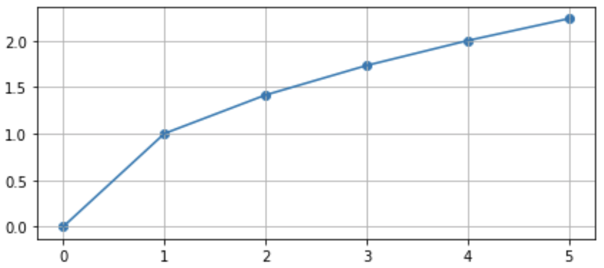Athugið
Stærð myndarinnar er gefin í tommum og (6,4) er sjálfgefið. Myndin er sköluð niður í ca. 2/3 þegar hún birtist á venjulegum fartölvuskjá, en er (a.m.k. nokkurnvegin) ósköluð ef bókin er prentuð sem pdf.
Súlurit
Hér er búið til súlurit (histogram) af normaldreifðum slembigögnum. Stikinn
binsgefur fjölda súlna ograngegefur svæðið á x-ás sem súluritið nær yfir.import matplotlib.pyplot as plt import numpy.random as npr x = npr.normal(size = 500) plt.hist(x, bins=12, range=(-3,3)) plt.xlabel('x') plt.ylabel('fjöldi gilda á hverju bili (af 500)');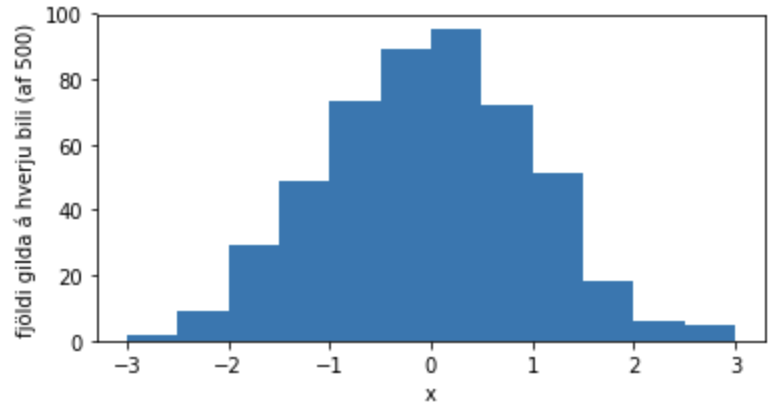Athugið
Ýmsar teikniskipanir skila upplýsingum sem skrifast í vinnubókina en eru oftast óþarfar. Semíkomman aftast í
plt.ylabeler til að losna við þessa útskrift.Skipunin
histreiknar sjálf hæð hverrar súlu en það er líka hægt að láta hæð súlnanna koma úr lista eða vigri með því að nota skipuninabar. Um það er sýnt dæmi í næsta kafla.
2.4.3. Pandas og teikningar¶
Matplotlib teikniskipanir geta notað dálka í Pandas-töflum sem viðföng. Til dæmis, ef xy.xlsx hefði tvo dálka, „x“ og „y“, þá mætti teikna línurit af þeim með skipununum:
df = pd.readexcel("xy.xlsx")
plt.plot(df["x"], df["y"])
Í eftirfarandi dæmi eru Pandas-dálkar notaðir sem viðföng í skipanirnar bar og xticks.
Sýnidæmi
Hér er dæmi sem teiknar súlurit af kosningaúrslitunum 2017 sem voru á dagskrá í sýnidæmi í grein 2.3.1:
plt.figure(dpi=150)
kosn = pd.read_excel("http://cs.hi.is/strei/kosningar.xlsx")
x = range(len(kosn))
plt.bar(x, kosn["Atkvæði"], color="tomato")
plt.xticks(x, kosn["Listi"], rotation="vertical");
plt.ylabel('Atkvæði')
plt.title('Úrslit alþingiskosninga 2017');
Hér er verður x listinn [0,1,2…9] (það voru 10 framboðslistar). Hér er listi yfir liti. Forritið teiknar svo þessa mynd:
2.4.4. Töflur yfir Matplotlib-skipanir¶
Hér er fyrst listi yfir nokkrar aðal teikniskipanirnar ásamt tilvísunum í kaflana þar sem um þær er fjallað.
|
Býr til mynd (grein 2.4.2) |
|
Teiknar punkta í tilgreindum x- og y-hnitum (greinar 2.4.2 og 2.4.7) |
|
Teiknar línustrik sem tengja saman punkta (greinar 2.4.2 og 2.4.5) |
|
Teiknar súlurit yfir tíðni – hæð súlna fæst með talningu (greinar 2.4.2 og 2.4.5 |
|
Teiknar súlurit með gefinni súluhæð (grein 2.4.3) |
|
Bætir skýringum á línum/skatter-punktum við teikningu (grein 2.4.5) |
|
Vistar teikningu í png-skrá ( |
|
Skrifar texta inn á mynd (sjá næstu töflu) |
|
Birtir mynd (þarf ekki í Jupyter) |
|
skrifar texta aftan við punkt (x,y) |
|
– með n punkta letri |
|
– ofan við punkt (vertical alignment) |
|
– aftan við punkt (horizontal algn) |
|
– með punkt í miðjum texta |
Teikniskipanirnar bjóða svo upp á fjölda stýristika (control parameters) til að stjórna lit teikninga, breidd súlna, leturstærð, merkingum ása o.s.frv. Auk stýristikanna eru svo notaðar ýmsar hjálpar- eða stýriskipanir til breyta mörkum ása, bæta við skýringartextum, rúðuneti o.fl. Næstu töflur gefar yfirlit yfir helstu stýristika og stýriskipanir.
|
Litur línurits (grafs) eða súlurits. Má skammstafa r, g, b, y, w, k (black), c (cyan), m (magenta) eða nota streng með litanafni |
|
gagnsæi, 0 alveg gagnsætt, 1 alveg ógagnsætt (sjálfgefið) |
|
Breidd línu í línuriti eða súluramma í súluriti. Eining punktar (~1/3 mm), sjálfgefið lw=1.5. |
|
Línutegund, getur t.d. verið |
|
Merki fyrir punkta í plot. Algengur marker er |
|
Stærð markers í |
|
Litur á rönd súlna eða merkja. Ein tegund súlurita notar |
|
gefur súlutegund eða línuriti skýringu, notað með |
|
fjöldi súlna, sjá dæmið að ofan |
|
ytri mörk súlurits, sjá dæmið að ofan (gott að velja bins í samræmi við range). |
|
„relative width“ (sjálfgefið 1.0) |
|
Merki fyrir punkta, sjá marker í töflunni að ofan. |
|
stærð punkta, flatarmál í ferpunktum (punktur ≈ 1/3 mm). Má vera vigur og þá fær hver punktur sína stærð. |
|
litur (allir punktar í sama lit), sjá color í töflunni að ofan |
|
vigur af litum (hver punktur í sínum lit). Má vera vigur af tölum og þá litast punktarnir með litaskala (color map). |
|
gagnsæi, sjá töfluna að ofan |
|
litur á rönd punkta |
Athugið
Sjálfgefin punktastærð er 36 = 6^2, sem gefur sömu stærð og o-merki í
plot-skipun með markersize 6 (sem er sjálfgefna stærðin í plot). Ath. að það
er ekki stutt að skrifa size í stað s
Þessar fyrirlestrarnótur skauta (ennþá) framhjá umfjöllun um litaskala, og við látum duga að vísa í 4. kaflann í Python Data Science Handbook.
|
stillir neðri og efri mörk x-áss |
|
Stillir neðri og efri mörk y-áss |
|
setur fyrirsögn á teikningu |
|
setur textaskýringu við x-ás |
|
setur textaskýringu við y-ás |
|
setur merkingar á tilgreindar staðsetningar á x-ás ( |
|
setur merkingar á tilgreindar staðsetningar á y-ás |
|
stillir strikin við ásamerkingarnar (l og w mælt í punktum (1/3 mm);
í stað |
|
teiknar rúðunet (nota má |
|
fjarlægir ramma utanum teikningu |
|
bætir við lóðréttri línu (sjálfgefið er x = 0) |
|
bætir við láréttri línu (sjálfgefið er y = 0) |
|
bætir við kassa með skýringum á línuritum/súlum sem búnar voru til með |
Loks er hér hlekkur á yfirlit yfir allar Matplotlib-skipanir.
2.4.5. Þrjú dæmi um teikningar¶
Til frekari glöggvunar eru hér þrjú viðbótardæmi.
Dæmi um plot:
x = np.arange(5) y = np.sqrt(x) plt.figure(figsize=(4, 1.8), dpi=90) # dpi=72 sjálfgefið plt.plot(x, y, lw=3, ls=':', c='r', marker='o', ms=8) plt.xlabel('x') plt.ylabel('y = √x')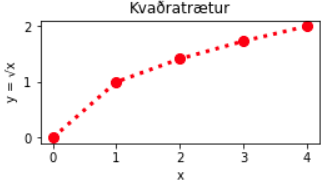
Dæmi um legend:
t = np.linspace(0, 2*np.pi, 30) s = np.sin(t) y = npr.random(30) plt.figure(figsize=(5,2)) plt.plot(t,s,label='sin(x)') plt.plot(t,y,label='slembitölur') plt.grid() plt.legend();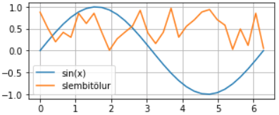
Dæmi um hist
x = npr.normal(size = 500) plt.figure(figsize = (6,3)) plt.hist(x, bins=12, range=(-3,3), rwidth=0.8, color='c', ec='k'); plt.xlabel('x-gildi'); plt.ylabel('fjöldi'); plt.grid(axis='y')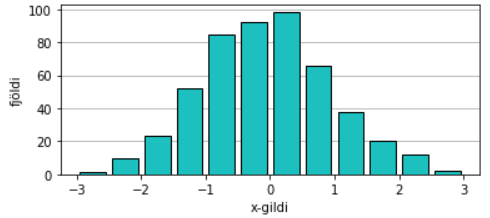
2.4.6. Teikning af gröfum falla¶
Við byrjum þennan kafla á æfingu, sem snýst bæði um efni undanfarandi kafla og þessa. Lesendur eru hvattir til að spreyta sig á henni áður en þeir lesa áfram því hér á eftir koma svör við ýmsum atriðum í henni.
Æfing
Opnið vinnubókina Fallateikning í JupyterLab og fylgið leiðbeiningum í henni.
Til að teikna graf er byrjað á að núllstilla með því að keyra:
import numpy as np
import numpy.random as npr
import matplotlib.pyplot as plt
plt.rc('axes', axisbelow=True)
np.set_printoptions(precision=2, floatmode='fixed', suppress=True)
Einfalt graf. Með því að nota linspace með hæfilegu skrefi má nálga graf falls með bútum af línustrikum. Við getum t.d. teiknað graf sínus-fallsins á bilinu \([0, 4\pi]\) með:
pi = np.pi t = np.linspace(0, 4*pi) plt.plot(t, np.sin(t));
- Úttak:
- 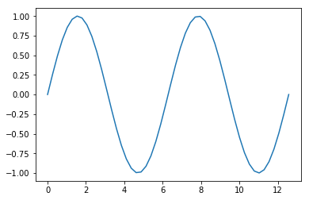
Fínna graf. Hér er hægt að bæta ýmislegt. Afritum forritsbútinn úr lið 1 og bætum við:
teygjum á grafinu (breikkum myndina) með skipuninni
plt.figure(figsize=(12,4))(á undan plot).Ef grannt er skoðað sjást línustrikin. Mýkra graf fæst t.d. með
linspace(0, 4*pi, 200)Svo má bæta við rúðuneti með
plt.gridÞað er hægt að teikna x- og y-ása með
plt.axhlineogplt.axvline. Notið með stikac='k'til að fá svarta ása.Við getum látið x-ásinn ná t.d. frá -0.2 til \(4\pi\) með
plt.xlim([-0.2, 4*pi]).Það má fjarlægja rammann með
plt.box(False)Síðasta tötsið fæst með
plt.tick_params(length=0)
- Lausn (sjá úttak í svari við lið 3):
t = np.linspace(0, 4*pi, 200) plt.figure(figsize=(15,4)) plt.grid() plt.axvline(c='k') plt.axhline(c='k') plt.box(False) plt.plot(t, np.sin(t)) plt.xlim([-0.2, 4*pi]) plt.tick_params(length=0);
Kósínus bætt við. Teiknum í framhaldi \(y = \cos x\) inn á sömu mynd.
- Lausn:
plt.plot(t, np.cos(t))
- Úttak (úr 2 og 3):
- 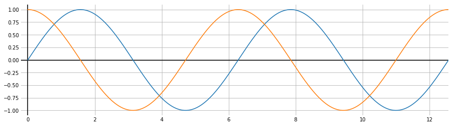
Graf vísisfallsins exp(x). Teiknum nú nýja mynd með \(y = e^x\) á bilinu \([-5, 2]\).
- Lausn:
t = np.linspace(-5,2, 200) plt.figure(figsize=(9,6)); plt.grid() plt.axvline(c='k'); plt.axhline(c='k') plt.box(False) plt.plot(t, np.exp(t)); plt.xlim([-5, 2]) plt.tick_params(length=0)
- Úttak:
- 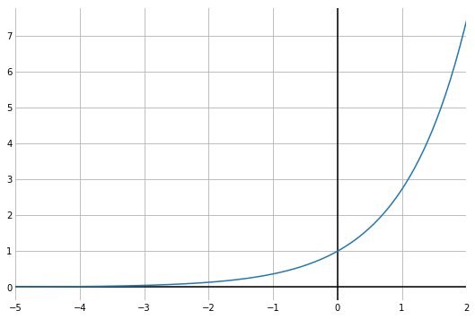
2.4.7. Teikning punktasafns og jafna bestu línu¶
Æfingarnar sem hér fylgja eru líka í vinnubókinni Fallateikning, sbr. innganginn í grein 2.4.6. Mælt er með að spreyta sig á æfingunum þar. Ef eftirfarandi forritsbútar eru afritaðir héðan inn í JupyterLab þarf að keyra fyrst núllstillingarkaflann sem er eftst í grein 2.4.6.
Slembigögn: Í eftirfarandi reit (#PLÖNTUR) eru búin til slembigögn (sem gætu t.d. sýnt hæð 50 trjáa \(y\) sem fall af aldri þeirra, \(x\)). Hér fylgir \(y\) líkaninu:
\[y = 1.5 x + 0.3 + \varepsilon\]þar sem \(x\) er normaldreifð skekkja með meðaltal 0 og staðalfrávik 0.7. Bætið við útprentun x og y aftast í reitinn og keyrið hann.
#PLÖNTUR n = 50 x = 1 + 5*npr.random(n) # Jafnt dreifð gögn á bilinu [1,6] e = 0.7*npr.normal(size=n) # Normaldreifðar skekkjur með staðalfrávik 0.7 y = 1.5*x + 0.3 + e
- Lausn:
print(x,y)
- Úttak:
[5.74 2.00 5.68 3.61 3.54 2.66 4.74 1.47 2.39 1.87 4.51 2.01 2.31 3.03 1.75 1.68 2.35 5.71 1.01 4.30 4.96 4.79 5.30 5.81 3.75 3.30 5.31 3.99 1.33 3.44 2.67 1.04 5.22 2.91 1.59 2.39 1.85 3.30 2.17 4.25 1.32 1.06 2.15 4.31 4.90 1.57 2.75 1.52 1.36 3.04] [8.21 3.22 8.91 6.15 4.88 4.48 6.57 2.03 3.42 3.53 6.81 2.43 3.12 4.40 2.55 4.20 3.40 8.71 2.87 5.96 8.27 8.67 7.64 8.78 5.71 5.31 8.56 7.12 2.29 4.83 3.44 2.00 8.81 5.33 3.49 2.52 3.23 6.17 3.27 6.02 1.44 1.50 3.91 6.36 7.63 1.35 4.40 3.59 3.32 5.63]
Vigrar hlið við hlið: Í úttakinu að ofan parast samstæð gildi ekki. Ein leið til að bæta úr því er að búa til fylki með tvo dálka,
xogy. Það má gera með virkjanumnp.c\_[⋅,⋅](c fyrir column):xy = np.c_[x,y]
(það er líka til np.r_ virki, og ágæt útskýring er í þessu Quora svari
- Lausn:
xy = np.c_[x,y] print(xy[0:10,:]) # Prentum bara efstu 10 gildin
- Úttak:
[[5.74 8.21] [2.00 3.22] [5.68 8.91] [3.61 6.15] [3.54 4.88] [2.66 4.48] [4.74 6.57] [1.47 2.03] [2.39 3.42] [1.87 3.53]]
Skatter: En ekkert kemur samt í staðinn fyrir góða mynd:
u = npr.random(50) v = npr.random(50) plt.scatter(u, v, color='g');
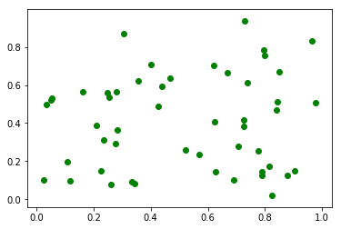Teiknum nú slembigögnin úr reitnum #PLÖNTUR með scatter.
Litir geta verið r, g, b, y, w, k (black), c (cyan), m (magenta) eða nafn
Bætið við rúðuneti með
plt.grid()Hægt er að merkja x-ás með
plt.xlabel, t.d.plt.xlabel('Aldur (ár)')og sömuleiðis y-ás
- Lausn:
plt.scatter(x,y,color='tomato'); plt.grid(); plt.xlabel('Aldur (ár)'); plt.ylabel('Hæð (m)');
- Úttak:
- 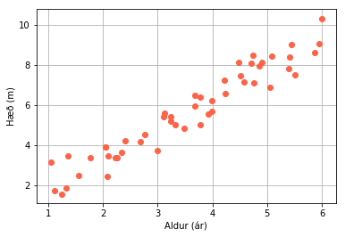
Jafna bestu línu: Við viljum finna „jöfnu bestu línu“, sem sé beina línu sem lýsir gagnasafninu vel. Ef jafna línunnar er \(y = l(x) = ax + b\) þá viljum við velja \(a\) og \(b\) þannig að summan af (lóðréttum) fjarlægðum punktanna frá línunni í öðru veldi verði sem minnst. Með öðrum orðum viljum við lágmarka fallið:
\[S(a,b) = \sum_{i=1}^{50}(ax_i + b - y_i)^2\]Skoðum þennan kafla í Wikipediu-greininni um línuleg minnstu kvaðröt (Linear least squares) til að glöggva okkur á þessu. Við getum beðið með að skoða stærðfræðina sem nota má til að finna \(a\) og \(b\) því það er til NumPy fall sem gerir það fyrir okkur:
(a,b) = np.polyfit(x,y,1)Síðasti stikinn (sem er 1 hér) er stigið á margliðunni sem við ákvörðum, en bein lína er 1. stigs margliða.
- Byrjun á lausn:
(a,b) = np.polyfit(x,y,1) print(f'Línan er y = {a:.2f}x + {b:.2f}')
- Úttak:
Línan er y = 1.49x + 0.37
Næsta skref er að teikna beinu línuna inn á grafið í lið 3. Það getum við gert með því að finna endapunkta hennar:
\[\begin{split}(X_0, Y_0) = (1, l(1)) = (1, 1a + b) \text{ og }\\ (X_1, Y_1) = (6, l(6)) = (6, 6a + b)\end{split}\]Það er auðvelt í Python, því
*og+verka stakvís á vigra: LátumX = np.array([1,6])ogY = a*X + b- Framhald á lausn:
X = np.array([1,6]) Y = a*X + b print(f'X={X}, Y={Y}')
- Úttak:
X=[1 6], Y=[1.86 9.32]
Að lokum er teiknað strik frá \((X_0, Y_0)\) til \((X_1, Y_1)\) áður en lausnin á 3. lið er keyrð aftur:
- Lokin á lausninni:
plt.plot(X,Y,linewidth=2.5) # Og svo úr lausn á 3. lið: plt.scatter(x,y,color='tomato'); plt.grid() plt.xlabel('Aldur (ár)'); plt.ylabel('Hæð (m)')
- Úttak:
- 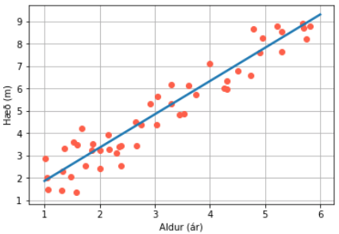